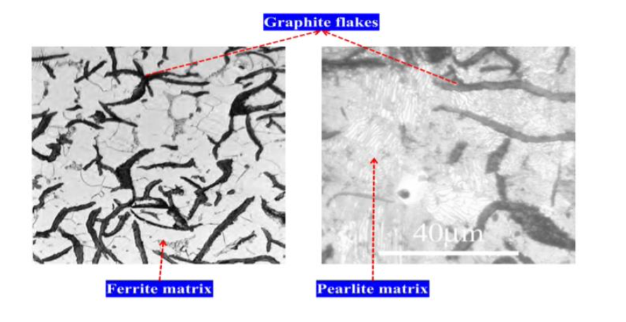
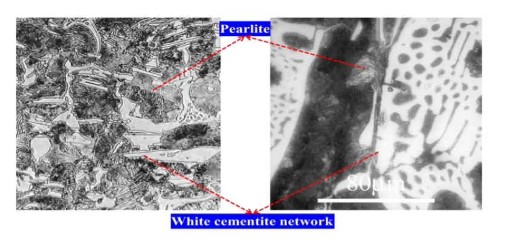
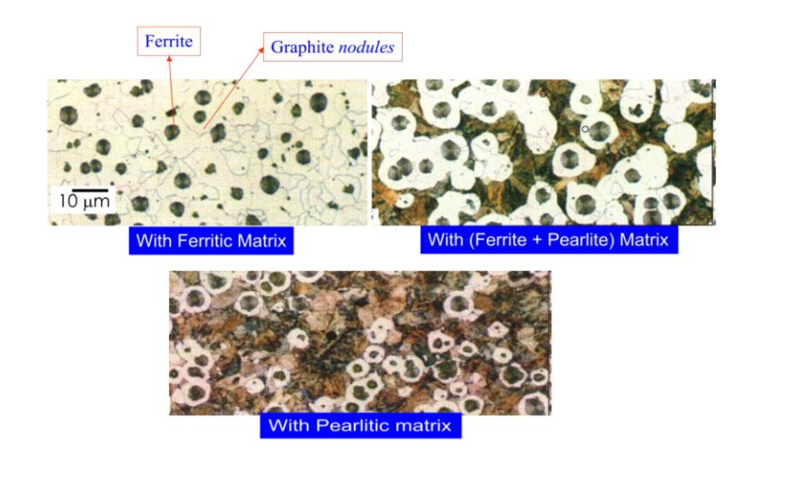
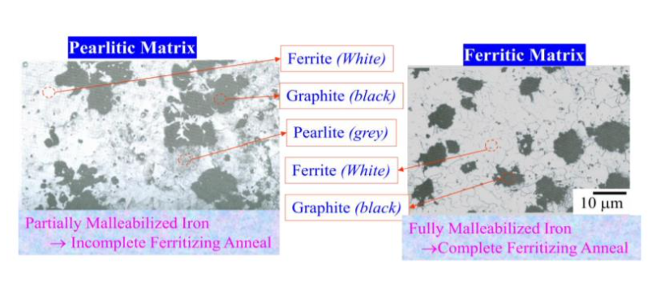

Metallurgical and Materials Engineering →PMM laboratory →List Of Experiments
Microstructural analysis of cast-iron specimens
Theory
Cast iron (>2.1% carbon) usually refers to grey iron, but also identifies a large group of ferrous alloys, which solidify with a eutectic. The colour of a fractured surface can be used to identify an alloy. White cast iron is named after its white surface when fractured, due to its carbide impurities which allow cracks to pass straight through. Grey cast iron is named after its grey fractured surface, which occurs because the graphitic flakes deflect a passing crack and initiate countless new cracks as the material breaks. And other types are Ductile/Nodular cast iron and Malleable cast iron. Carbon (C) and silicon (Si) are the main alloying elements, with the amount ranging from 2.1 to 4 wt% and 1 to 3 wt%, respectively. While this technically makes these base alloys ternary Fe-CSi alloys, the principle of cast iron solidification is understood from the binary iron-carbon phase diagram. Since the compositions of most cast irons are around the eutectic point of the ironcarbon system, the melting temperatures closely correlate, usually ranging from 1,150 to 1,200 °C which is about 300 °C lower than the melting point of pure iron. Cast iron tends to be brittle, except for malleable cast irons. With its relatively low melting point, good fluidity, castability, excellent machinability, resistance to deformation and wear resistance, cast irons have become an engineering material with a wide range of applications and are used in pipes, machines and automotive industry parts, such as cylinder heads (declining usage), cylinder blocks and gear box cases (declining usage). It is resistant to destruction and weakening by oxidisation (rust).
Gray Cast iron :
When a cast iron is solidified slowly, the tendency of carbon to separate out as graphite increases. In gray cast iron the graphite precipitates as irregular, elongated, curved and interconnected plates. Although the flakes appear as if separated in the two dimensional microstructure, they are interconnected in three dimensional structures. The large graphite flakes not only interrupt the continuity of the matrix but also act as stress risers. As a result, the strength and ductility of the gray cast iron decreases. However, the presence of flake graphite provides good wear and thermal properties along with good damping capacity. Gray cast iron is widely used for gear and pump housings, machines beds, brake drums, motor frames and electrical equipment.

White cast iron :
White cast irons are very brittle and contain eutectic mixture of austenite and cementite (known as ledeburite) upon cooling. A typical microstructure of white cast iron consists of dendrites of transformed austenite (later to pearlite) in white interdendritic network of cementite. Cementite is a hard, brittle interstitial compound. Since white cast iron contains relatively large amounts of cementite in the form of continuous interdentritic network, it makes the white cast iron “hard” and “wear resistant”. However, it is extremely brittle and difficult to machine. White cast irons have limited in engineering applications, because of inherent brittleness and lack of machinability. They are used where wear resistance is most important, and service condition does not require ductility such as liners for cement mixtures, ball mills, certain type of drawing dies and extrusion nozzles.

Nodular/Spheroidal cast iron/ Ferritic Pearlitic Cast Iron/Bull’s eye :
Malleable cast iron is essentially white cast iron which has been modified by heat treatment. It is formed when white cast iron is heated to around 920 deg C and then left to cool very slowly. Graphite separates out much more slowly in this case, so that surface tension has time to form it into spheroidal particles rather than flakes. Due to their lower aspect ratio, spheroids are relatively short and far from one another, and have a lower cross section. They also have blunt boundaries, as opposed to flakes, which alleviates the stress concentration problems faced by the gray cast iron. The white cast iron is converted to malleable cast iron by a two stage heat treatment process to a condition having most of its carbon content in the form of irregularly shaped nodules of graphite, called temper carbon. The structure of malleable cast iron consists of ferrite, pearlite and tempered carbon.

Malleable Cast Iron :
Malleable cast iron is essentially white cast iron which has been modified by heat treatment. It is formed when white cast iron is heated to around 920 deg C and then left to cool very slowly. Graphite separates out much more slowly in this case, so that surface tension has time to form it into spheroidal particles rather than flakes. Due to their lower aspect ratio, spheroids are relatively short and far from one another, and have a lower cross section. They also have blunt boundaries, as opposed to flakes, which alleviates the stress concentration problems faced by the gray cast iron. The white cast iron is converted to malleable cast iron by a two stage heat treatment process to a condition having most of its carbon content in the form of irregularly shaped nodules of graphite, called temper carbon. The structure of malleable cast iron consists of ferrite, pearlite and tempered carbon.
